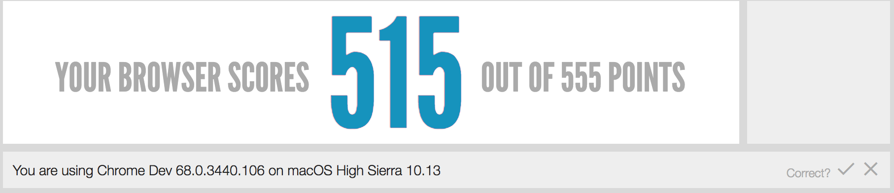

Por Paco Marín, Quasartech
Mat: A01207776,Contacto: A01207776@itesm.mx
Introducción
Bienvenido al laboratorio de DAW realizado por Quasartech,el objetivo de esta web es poner en práctica lo básico de HTML y ayudar a entender conceptos del mismo,
Preguntas Lab 1
¿Cuál es la diferencia entre Internet y la World Wide Web?
Internet es una red de redes que permite la interconexión entre computadoras y dispositivos.
WWW o World Wide Web es un protocolo utilizado para transmitir información.
- GET: Solicita la representación de un recurso específico. Solo peude recuperar datos.
- HEAD: Idéntica a GET, pero no devuelve el cuerpo de a respuesta.
- POST: Envía un recurso específico a un entidad, causando un cambio secundario en el estado del servidor.
- PUT: Reemplaza las peticiones actuales del recurso de destino con la carga útil de la petición.
- PATCH: Aplica modificaciones parciales en curso.
- DELTE: Borra un recurso específico.
¿Qué método HTTP se debe utilizar al enviar un formulario HTML, por ejemplo cuando ingresas tu usuario y contraseña en algún sitio? ¿Por qué?
Se debe utilizar el método POST, ya que se solicita al servidor comprobar la información proporcioanda por el usuario.
¿Qué método HTTP se utiliza cuando a través de un navegador web se accede a una página a través de un URL?
Se debe utilizar el método GET ya que se solo se esta pidiendo que el servidor regrese un recurso, en este caso la información de la URL.
Un servidor web devuelve una respuesta HTTP con código 200. ¿Qué significa esto? ¿Ocurrió algún error?
No ha ocurrido ningún error, al contrario, es la manera en la que el servidor indica que la solicitud ha tenido éxito.
¿Es responsabilidad del desarrollador corregir un sitio web si un usuario reporta que intentó acceder al sitio y se encontró con un error 404? ¿Por qué?
No necesariamente, error 404 significa que el servidor no encontró la información solicitada; generalmente sucede por error del cliente al escribir mal la URL.
¿Es responsabilidad del desarrollador corregir un sitio web si un usuario reporta que intentó acceder al sitio y se encontró con un error 500? ¿Por qué?
Si, porque el error 500 implica un error en el código de la página por lo cual es completa responsabilidad del desarrollador encontrar el error y corregirlo.
¿Qué significa que un atributo HTML5 esté depreciado o desaprobado (deprecated)? Menciona algunos elementos de HTML 4 que en HTML5 estén desaprobados.
Elementos pertenecientes a HTML4 que ya no se usan en HTML5, ejemplo:rev,charset,target,char,nowrap.
- HTML5 define una sintaxis que es compatible con HTML4.
- Para definir el juego de caracteres se introduce un nuevo atributo para la etiqueta "meta":meta charset=”UTF-8.
- Se simplica el DOCTYPE: !DOCTYPE html
- HTML5 permite incluir elementos de SVG y MathML.
- Se introducen nuevos elementos, como: section, article, aside, header, footer, etc.
- Se introducen nuevos atributos, como: media, charset, autofocus, placeholder, etc.
- Algunos elementos cambian, como: a, b, i, menu, etc.
- Algunos atributos cambian, como: type, name, summary, etc.
- Algunos elementos desaparecen, como: basefont, big, center, etc.
- Algunos atributos desaparecen, como: align, background, bgcolor, etc.
- Mejora de las API, como: getElementsByClassName() y innerHTML.
¿Qué componentes de estructura y estilo tiene una tabla?
Los componentes de una tabla son: filas <tr>, encabezado <th> y celdas <td>, en las tablas puedes especificar el tamño del borde, la forma,
el espaciado entre las celdas, la alineación, entre otros.
¿Cuáles son los principales controles de una forma HTML5?
Son: color, date, datetime, email, number, range, time, url y submit
¿Qué tanto soporte HTML5 tiene el navegador que utilizas? Puedes utilizar la siguiente página para descubrirlo:
http://html5test.com/(Al responder la pregunta recuerda poner el navegador que utilizas)

¿Cuál es el ciclo de vida de los sistemas de información?
Es un sistema que engloba a todos elementos necesarios para la realización de la infraestructura necesarias para recopilar, procesar y almacenar información.
Incluye la fase de desarrollo hasta el post desarrollo, mantenimiento etc.

¿Cuál es el ciclo de desarrollo de sistemas de información?
Es un enfoque or fases ara el análisis y diseño, pretende que los sitemas se desarrollen mejor utilizando un ciclo específico del desarrolaldor y el usuario.Comprende solo la fase de desarrollo del sistema.
Preguntas Lab3
Como ingeniero de software ¿cuál es tu recomendación sobre el uso de !important en un CSS?
Solo usarlo cuando se desea que un elemento tenga prioridad sobre todo lo demás, sin mebagro debe tenerse cudiado ya que podría generar problemas con el diseño general de la página.
Si se pone una imagen de fondo en una página HTML, ¿por qué debe escogerse con cuidado?
principalmente por el tamañao de la imagen, podría verse distoriconada y afectar la vista general del sition según el navegador y la pantalla desde donde sea visualizada.
Como ingeniero de software, ¿cuál es tu recomendación al elegir las unidades de un propiedad de estilo entre %, px y pt?
En casos generales es mejor usar % porque el tamaño proporiconalmente según la pantalla. Es buena idea usar pt sobre todo con texto ya que si el usuario ajusta el tamaño según la necesidad, el texto se ajustará.
Pt es bueno de igual forma para implementar páginas respinsivas a las diferentes pantallas.Px es recomendable usarlo cuando se requieren tamañaos específicos, pero siempre se verán de ese tamaño.
¿Por qué el uso de una versión minimizada del CSS mejora el rendimiento del sitio?
Porque son menos carácteres a enviar, y por lo tanto menos trabajo para procesar al momento de enviar y recibir información por parte del servidor.
Preguntas Lab4
¿Qué diferencias y semejanzas hay entre Java y JavaScript?
Son 2 cosas totalmetne distintas, lo único que tienen en común es el nombre.
¿Qué métodos tiene el objeto Date?
getTime(), getSeconds(), getTimezoneOffset(), getHours(), getFullear().
¿Qué métodos tienen los arreglos?
pop(), push(), reverse(), sort(), unishift().
¿Cómo se declara una variable con alcance local dentro de una función?
Con la palabra reservada "let".
¿Qué implicaciones tiene utilizar variables globales dentro de funciones?
El hecho de que pueden ser modificadas de froma indeseada fuera de las funciones.
¿Qué método de String se puede utilizar para buscar patrones con expresiones regulares?¿Para qué podrías utilizar esto en una aplicación web?
Se podría utilziar cuadno...
Tecnologías
- URL:Uniform Resource Locator, es un estándar que permite denominar recursos dentro de internet para ser localizados.
- MIME:Multipurpose internet Email Extensions son una serie de especificaicones dirigidad al intercambio de información a través de internet.
- Errores en HTTP:
- 1xx:Resouestas informativas
- 2xx:Peticiones correctas
- 3xx:Redirecciones
- 4xx:Errorres del cliente
- 5xx:Error del servidor
- XML:eXtensible Markup Language, es un meta lenguaje, es un meta-lenguaje que permite definir lenguaje de marcas W3C utilizando infromación
de forma legible. Permite estructurar documentos grandes y da soporte abases de datos. - XHTML:eXtenible Typertext Markuk Language, es casi idéntico a HTML, sin embargo es más estrico y es una aplicación de XML.
- HTML5:Hypertext Markup Language, version 5, es la última versión del lenguaje básico de WWW. Específica las variantes de sintáxis de HTML.
- JS:JavaScript,Es un lenguaje de programación interpretado, orientado a objetos. Se utiliza principalmente para desarrollar interfaces web.
- PHP:Hypertexr Preprocessor, es un lenguaje de programación utilizado del lado del servidor para el desarrollo web con contenido dinámico.
- JSP:JavaServer Pages,es una tecnología para apoyar a los desarrolladores a crear páginas web dinámicas utilizando Java como lenguaje.
- AJAX:Asynchronous Javascript and XML,es una técnica de desarrollo web para crear aplicaciones interactivas que se ejecutan de forma asícrona entre el cliente y el servidor.
Referencias
Resources for developers, by developers. (n.d.). Retrieved from https://developer.mozilla.org/en-US/
Programación en Internet. (n.d.).
Retrieved from https://blogs.ua.es/pi/2011/01/17/¿cuales-son-las-diferencias-entre-html4-xhtml-1-0-y-html5/
Ceballos, M. B. (2015, July 20). Ciclo de vida de un sistema de información. Retrieved from
https://www.gestiopolis.com/ciclo-de-vida-de-un-sistema-de-informacion/